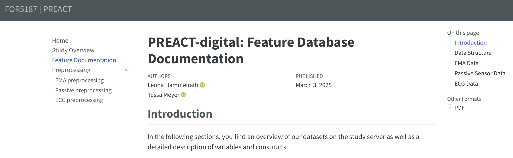
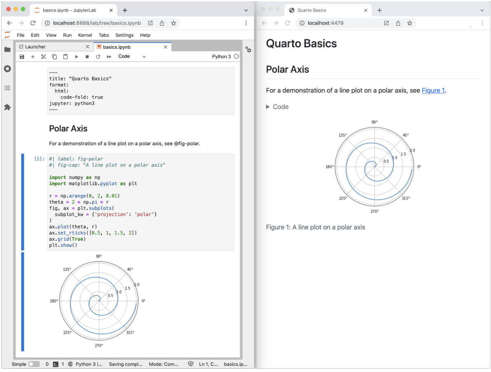
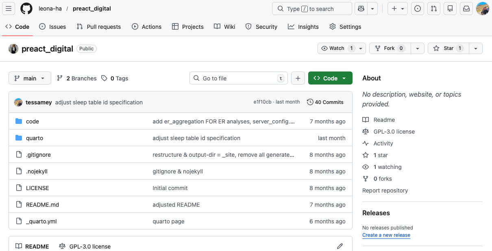
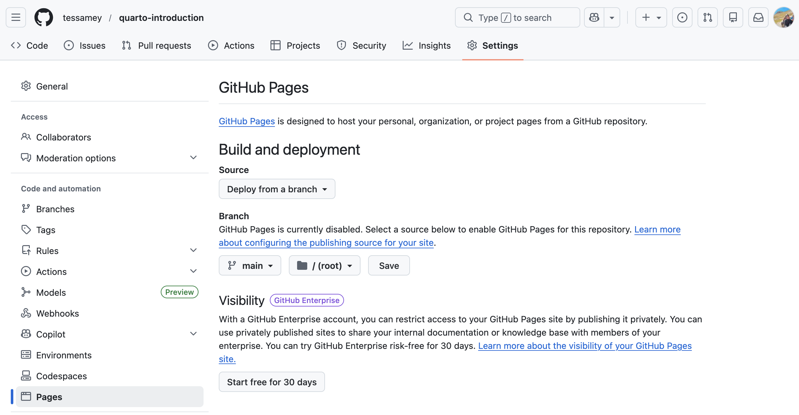

Data Documentation with Quarto & GitHub Pages: Using PREACT-digital as an example
2026-02-12
VSCode or RStudioYou can use one of the following editors:
.qmd file: “File” > “New file” > “Quarto Document”Quarto websites are built from multiple documents (e.g., .ipynb, .qmd) that share navigational elements, rendering options, and visual style.
_quarto.yml: website configuration (navigation, theme, format)index.qmd: Homepage (requiered)about.qmd: top-level page (e.g. project information)contact.qmd: top-level page (e.g. contact persons)docs
index.qmd (nested landing page within the folder)ecological-momentary-assessment.qmd (alternatively .ipynb)passive-sensing.qmdimages
.png_quarto.yml
project:
type: website
output-dir: _site
render:
- "quarto/*.qmd"
- "quarto/*.ipynb"
- "code/notebooks/*.ipynb"
- "!code/notebooks/er_aggregation.ipynb"
website:
title: "FOR5187 | PREACT"
#logo: "images/tiki.png" # Make sure this path is correct
navbar:
left: [] # explicitly empty
pinned: true
sidebar:
style: "docked"
collapse-level: 1
contents:
- href: quarto/index.qmd
text: Home
- href: quarto/quick_overview.ipynb
text: Study Overview
- href: quarto/documentation.ipynb
text: Feature Documentation
- section: Preprocessing
contents:
- href: quarto/EMA preprocessing.ipynb
text: EMA preprocessing
- href: quarto/Passive preprocessing.ipynb
text: Passive preprocessing
- href: quarto/ECG preprocessing.ipynb
text: ECG preprocessing
format:
html:
theme:
- cosmo
- brand
css: quarto/styles.css
toc: true
Terminal:


Terminal:

Introduction to Quarto